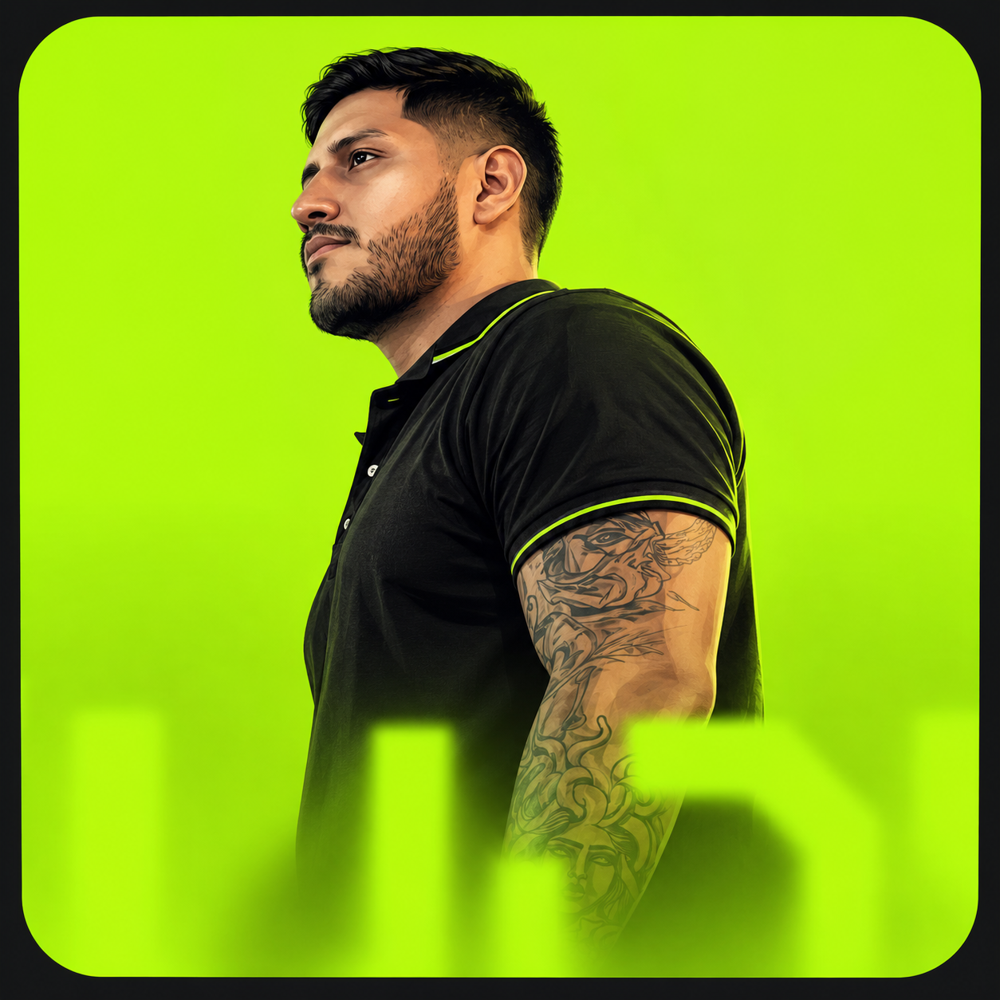
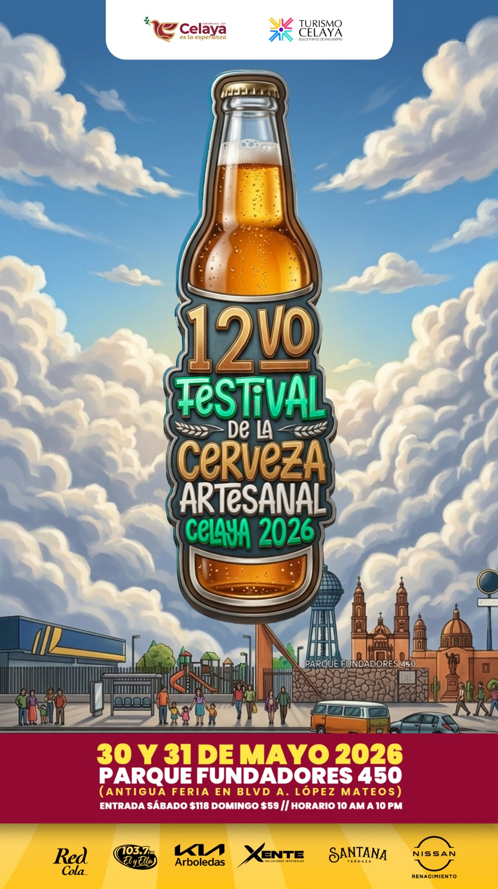
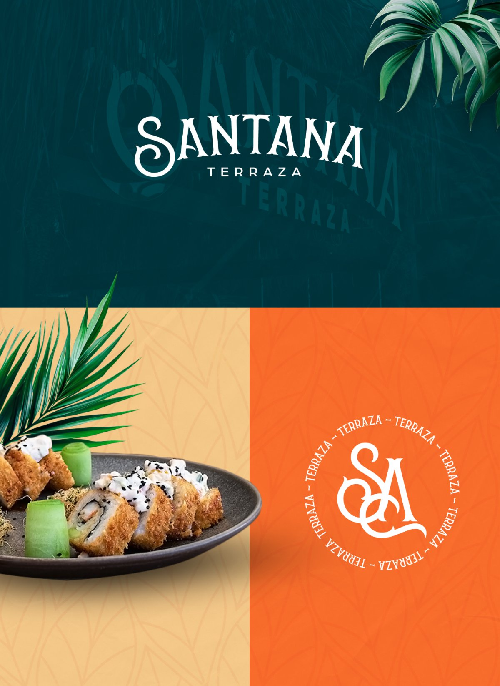
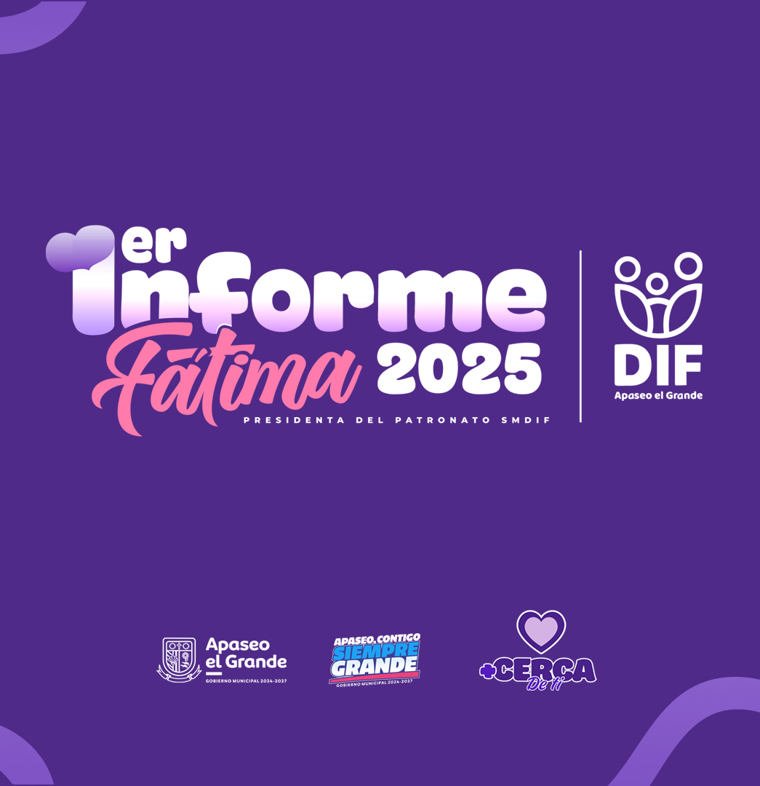

Marca
Defino el concepto y desarrollo una identidad visual con sus elementos, variantes y criterios de aplicación.

Soy Luis Pérez, director de arte en Celaya. Desarrollo identidades visuales, contenido y campañas para restaurantes, eventos, instituciones y empresas: del concepto a sus aplicaciones.
Soy Luis Pérez, director de arte y diseñador gráfico con más de diez años de trayectoria. Desde Celaya, Guanajuato, trabajo con marcas, eventos e instituciones en identidad visual, campañas y contenido.
Trabajo con concepto antes que decoración y con sistemas antes que piezas aisladas. Mi práctica de autor vive también bajo el alias Inox One, dedicado al lettering, el arte urbano y la ilustración.
Defino el concepto y desarrollo una identidad visual con sus elementos, variantes y criterios de aplicación.
Llevo la identidad a los puntos de contacto físicos del negocio, desde el menú hasta la señalética.
Desarrollo un sistema gráfico para redes que mantiene la comunicación reconocible y coherente en el tiempo.
Dirijo fotografía y video comercial para mostrar el producto, el espacio y la experiencia de marca.

Dirección visual para la 12.ª edición: concepto e ilustración principal, adaptados a publicidad exterior, puntos para fotografía y redes. La edición reportó más de 124,000 personas alcanzadas, 4,376 interacciones digitales, 32 marcas cerveceras y 45 expositores. La derrama local reportada fue de $4.5 millones MXN; corresponde al evento, no a una atribución directa al diseño.

Desarrollo de identidad para la terraza, con monograma, paleta cromática y aplicaciones para papelería, menús y comunicación de apertura.

Diseño editorial de 34 páginas e infografías, junto con un personaje institucional 3D. El informe reunió información de programas dirigidos a más de 13,000 personas beneficiarias en 42 comunidades.
Cada alcance se define a partir del brief, los objetivos y las aplicaciones que necesita el proyecto.
Una base visual clara para que tu marca se reconozca y pueda crecer con coherencia.
Llevamos la identidad a los puntos de contacto físicos de tu negocio.
Una línea visual consistente para comunicar en tus canales digitales.
Imágenes comerciales que muestran el producto, el espacio y su atmósfera.
La edición reportó más de 124,000 personas alcanzadas y 4,376 interacciones digitales con una inversión publicitaria de $1,746 MXN. El festival informó una derrama económica local de $4.5 millones MXN.
12.º Festival de la Cerveza Artesanal
Celaya · datos de la edición 2026
El proyecto desarrolló la identidad de Santana Terraza desde cero: monograma, paleta de color, papelería, menús y comunicación de apertura.
Identidad para hospitalidad
Santana Terraza · Celaya
El primer informe incluyó diseño editorial de 34 páginas e infografías, además de un personaje institucional 3D. Presentó programas dirigidos a más de 13,000 personas en 42 comunidades.
Comunicación institucional
1.er Informe DIF · Apaseo el Grande
Información práctica para iniciar un proyecto.
Empezamos con un brief para entender el negocio, sus objetivos y el público. Después acordamos alcance, presupuesto y calendario; presentamos una ruta creativa, desarrollamos los ajustes acordados y entregamos los archivos definidos para el proyecto.
Puedes escribirle directamente a Luis por WhatsApp al +52 413 121 6922 o al correo electrónico contacto@inoxone.com.mx. Escríbeme para conversar sobre el alcance y los siguientes pasos.
La propuesta define el alcance, los entregables, las condiciones de uso y el calendario. Se formaliza mediante contrato; Luis Pérez puede emitir el comprobante fiscal correspondiente (CFDI).
El plazo depende del alcance, las aplicaciones y las rondas de revisión acordadas. Se establece en la propuesta antes de iniciar el trabajo.
Trabajo con concepto antes que decoración y con sistema antes que piezas aisladas. La identidad, las aplicaciones y el contenido se desarrollan bajo una dirección visual común. Inox One reúne mi trabajo de autor en lettering, arte urbano e ilustración.
Cuéntame qué necesitas comunicar y definamos el alcance del proyecto.